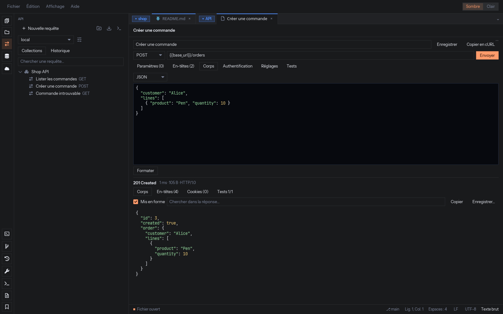
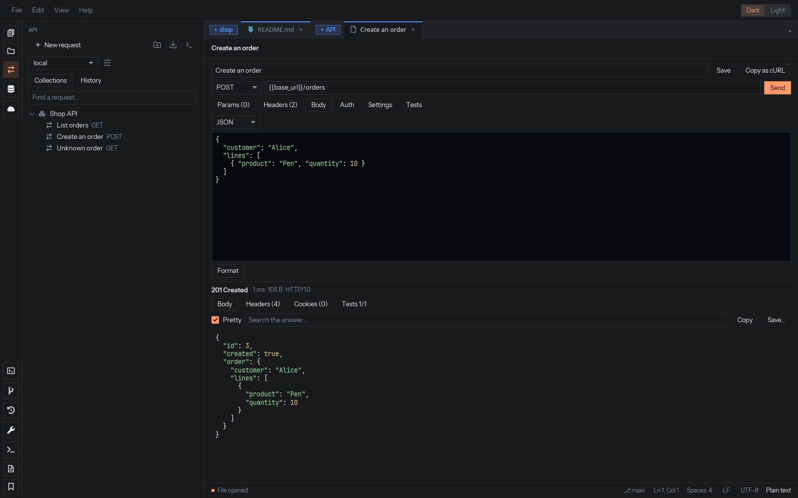
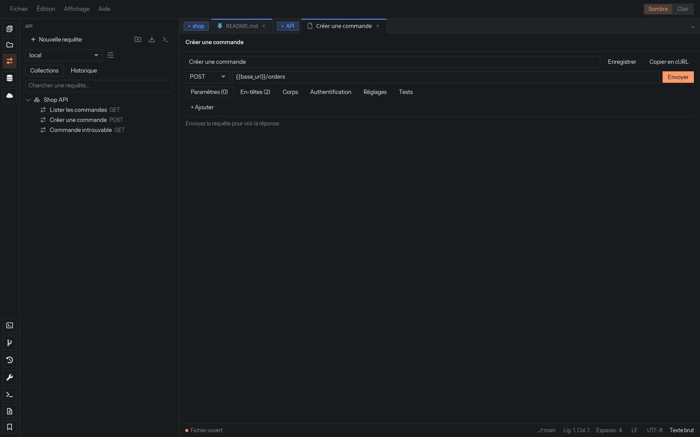
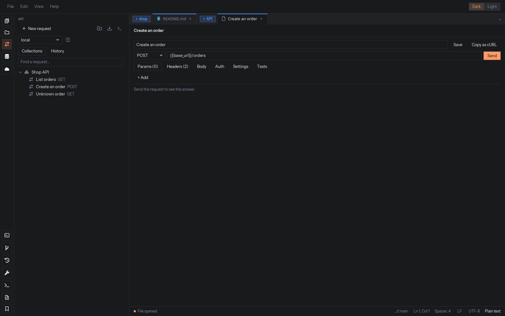
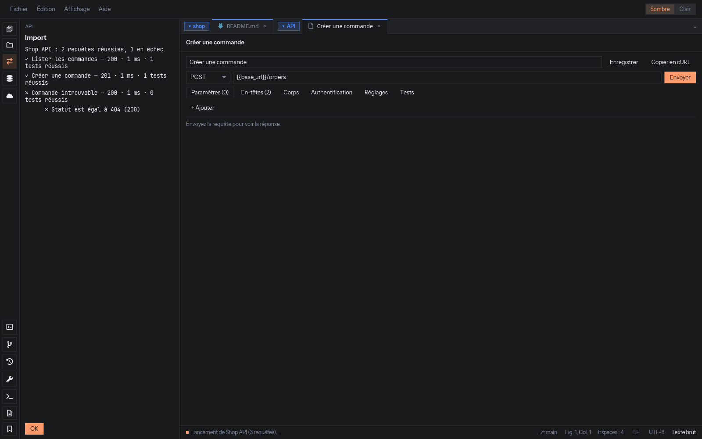
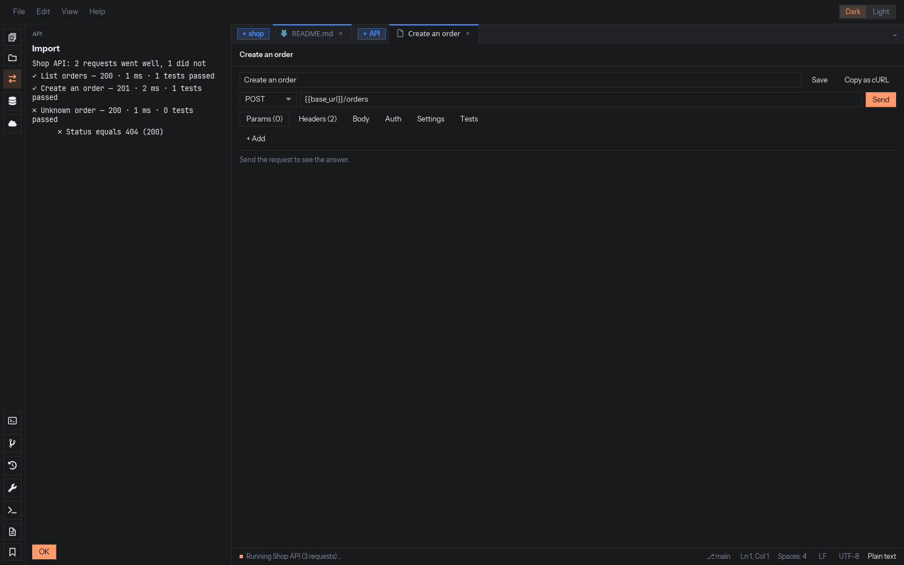

APIAPI
Un Postman léger : requêtes, collections, environnements, tests.A light Postman: requests, collections, environments, tests.


Une requête POST JSON avec en-têtes, et la réponse (statut, temps, corps coloré) dessous.A JSON POST request with headers, and the response (status, time, highlighted body) below.
Capture à venirScreenshot to comePrésentationOverview
Testez vos API HTTP sans quitter l'éditeur : requêtes dans des onglets, collections, environnements à variables, tests des réponses, et imports depuis Postman, OpenAPI ou cURL.
Test your HTTP APIs without leaving the editor: requests in tabs, collections, environments with variables, tests of the answers, and imports from Postman, OpenAPI or cURL.
RequêtesRequests
- Paramètres, en-têtes, corps JSON / texte / formulaire / multipart / fichier.Params, headers, JSON / text / form / multipart / file bodies.
- Authentification Bearer, Basic ou clé d'API ; délai maximal, redirections, TLS.Bearer, Basic or API-key authentication; time limit, redirects, TLS.


Panneau des collections et environnements, avec une variable {{base_url}}.Collections and environments panel, with a {{base_url}} variable.
Capture à venirScreenshot to comeOrganiserOrganise
- Collections et dossiers, historique des requêtes.Collections and folders, request history.
- Environnements avec des
{{variables}}; les valeurs secrètes sont gardées dans le trousseau.Environments with{{variables}}; secret values are kept in the keychain.


Résultat des tests d'une collection exécutée.Test results of a collection run.
Capture à venirScreenshot to comeTesterTest
- Tests sur les réponses et valeurs conservées d'une requête à l'autre ; exécution d'une collection entière.Tests of the answers and values kept from one request to the next; the run of a whole collection.
Importer, exporterImport, export
- Imports et exports Postman, OpenAPI 3 / Swagger 2 et cURL.Imports and exports of Postman, OpenAPI 3 / Swagger 2 and cURL.
Installer et réglerInstall and configure
Ouvrez Fichier › Préférences… › Plugins, cherchez « API » et cliquez sur Installer.
Open File › Preferences… › Plugins, search for “API” and click Install.
RéglagesSettings
Préférences › Plugins : certificats à approuver et proxy à utiliser.
Preferences › Plugins: which certificates to trust and the proxy to go through.
Code source et licenceSource and license
Dépôt : ardoise-editor/plugin-api · identifiant ardoise.api · version 1.3.2 · licence MIT.
Repository: ardoise-editor/plugin-api · id ardoise.api · version 1.3.2 · MIT license.